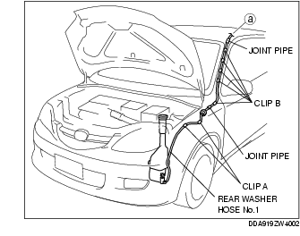
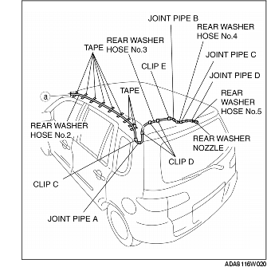

Rear washer hose removal/installation
1. Disconnect the negative battery cable.
2. Slightly bend back the mudguard (LH).
3. Disconnect the rear washer hose from the washer tank.
4. Remove rear washer hose No.1 from clips A.

5. Remove A-pillar trim (LH). (See A-PILLAR TRIM REMOVAL/INSTALLATION.)
6. Remove glove compartment No.1.
7. Remove rear washer hose No.1 from clips B.
8. Remove rear washer hose No.1 and the joint pipe.
9. Remove C-pillar trim (LH).
10. Remove clip C from the body.
11. Remove joint pipe A.
12. Remove the headliner. (See HEADLINER REMOVAL/INSTALLATION.)
13. Remove rear washer hose No.2 and the tapes.

14. Remove rear washer hose No.3 from clips D.
15. Remove clip E from the body.
16. Remove rear washer hose No.3 and joint pipe B.
17. Remove rear washer hose No.4 and joint pipe D.
18. Remove the rear washer nozzle, and then remove rear washer hose No.5.
19. Install in the reverse order of removal.